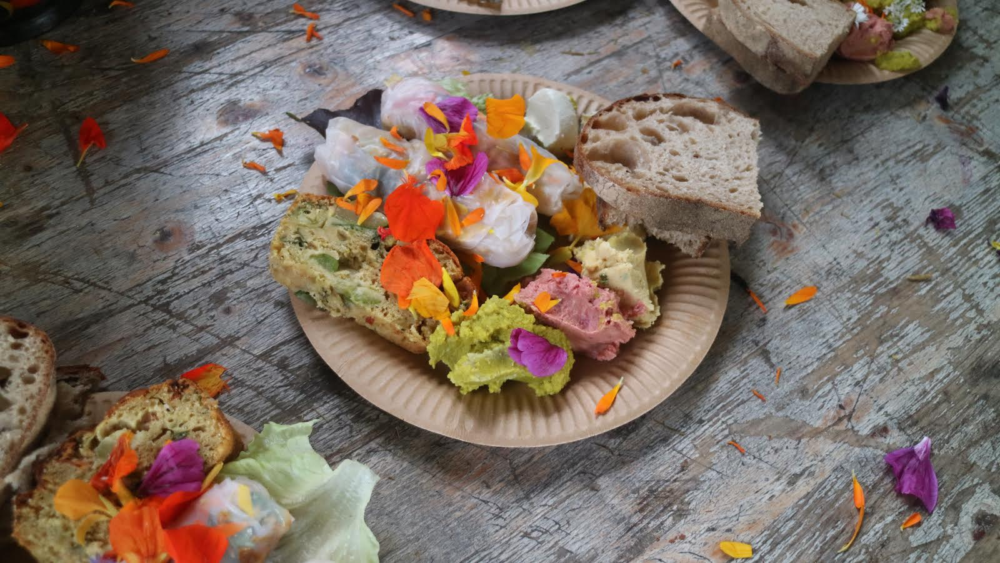
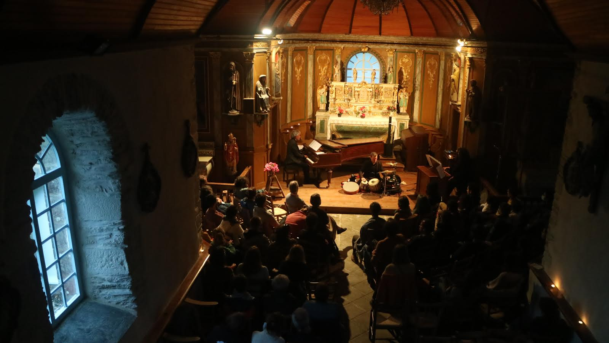

Retour sur la précédente édition

Concerts à prix libre, buvette et restauration sur place
Claviers dans les monts 19 et 20 juin 2021 Saint-Rivoal
Fanny Bourrillon, Eugénie Lefebvre, Caroline Arnaud, Andoni Aguirre, Thibault Guillemin, Charlotte Martin, Ensemble Ars'ys, Marcia Hadjimarkos
Affiche réalisée par Madenn Diabaté

Claviers dans les Monts - 2021
Véritable “voyage” dans le temps et l’histoire de la musique, ce festival ne regarde pas seulement en arrière : il fait dialoguer les artistes et permet des hybridations. En Juin 2021, pour la première édition, l’ensemble ARS’YS jouait ainsi des compositions de Hervé Lesvenan sur un piano Erard de 1840, accompagné d’un orgue positif et de percussions indiennes. Le pianiste Andoni Aguirre jouait en plein air des ragtime et des nocturnes de Chopin sur un piano moderne. Enfin, c’est avec des artistes lyriques de renom, Eugénie Lefebvre et Caroline Arnaud, que le timbre du piano s’est sublimé, selon la tradition Romantique qui veut que le piano et la voix s’entremêlent pour se confondre. De la chanson populaire de la Belle Époque (Reynaldo Hahn) aux lieder intimistes de Robert Schumann, le festival Claviers dans les monts privilégie ainsi les formations qui s’accompagnent de chanteurs et de chanteuses lyriques, mais pas seulement. Le public venu des Monts d’Arrée et du Finistère a pu apprécier le concerto de Schumann à deux pianos pour un final plus grandiloquent faisant dialoguer deux pianos à queue, l’un moderne, l’autre ancien. Enfin, l’apport d’un temps de concert conférence autour de la musique d’Igor Stravinsky permettait une plongée dans le répertoire du compositeur, un répertoire plus méconnu, là encore, mêlant le piano et la voix.
